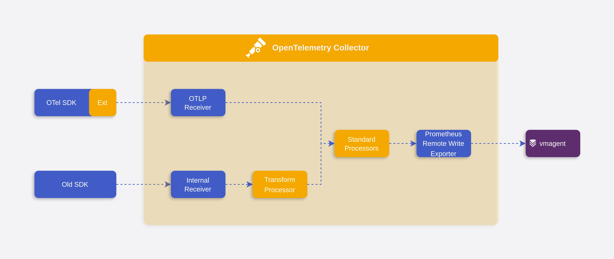
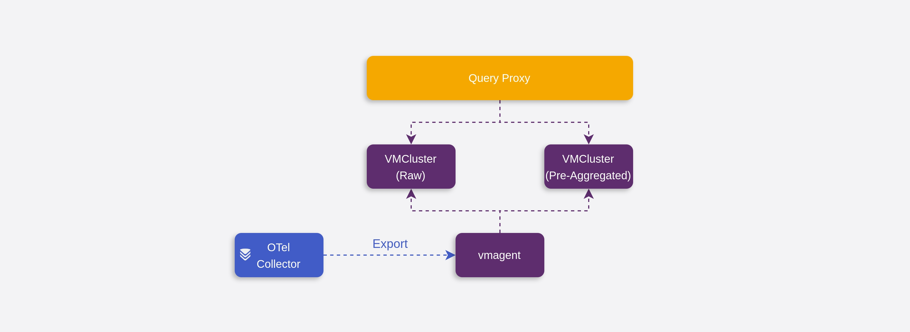
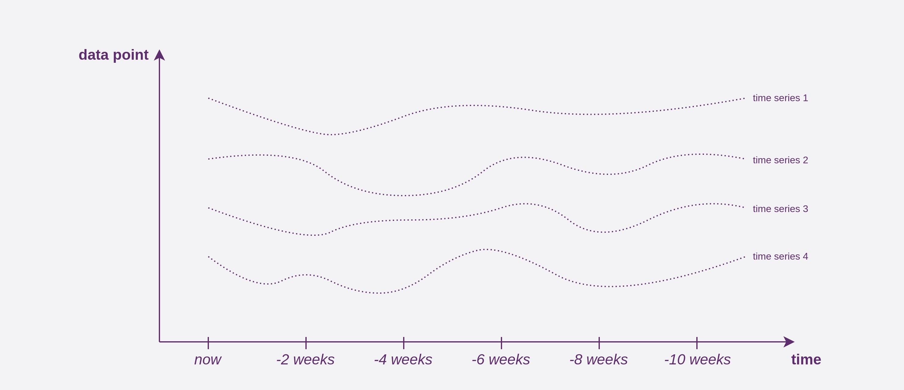

GOPS 见闻：虎牙的监控指标管理经验与延伸思考
上周在深圳参加了 GOPS 大会，来自虎牙的同学分享了他们在监控指标标准化和管理方面的实践，核心要点在于：
- 用 OpenTelemetry 完成指标的标准化；
- 依靠 VictoriaMetrics 预聚合和存储指标，提供高性能的查询。
其中一些细节因为时间原因没有覆盖到，所以周末重新思考了一下，整理出本文。
标准化
可观测性领域在过往几年内变化很大，涌现了很多新的技术，所以变更技术栈以解决新的问题并不常见。在监控指标管理上，虎牙也存在多套方案，老方案通常都会有这样的毛病：
- 不适应现有的需求：业务量与基础设施都与设计之初有巨大差异（e.g. 从虚拟机到容器化）；
- 指标缺乏管控：业务快速扩张时追求“易用”、“好用”，不设立使用门槛和要求；平稳期希望控制成本，但规则难以推动。
解决这些问题的方法有很多，其中最简单粗暴的是：再重新做一套系统。
如果想在 2024 年打造一套可观测性体系，OpenTelemetry 或许是个不错的选择。OpenTelemetry 诞生的愿景是解决可观测性数据标准化的问题，减少用户需要了解的 API，摆脱对单一 Vendor 的依赖。

虎牙在指标标准化上的实践，或许也是很多企业尝试过的：
- 确定以 OpenTelemetry 作为指导标准；
- 指标 SDK 基于 OpenTelemetry SDK 进行封装；
- 最小化开发量，能覆盖大部分的编程语言；
- 使用 OpenTelemetry Collector 兼容历史格式的数据上报，依照标准转换；
- 高度模块化，实现 Receiver 难度很低；
- 使用 OpenTelemetry Collector 导出给指标存储系统（Prometheus，VictoriaMetrics 或者 Vendor）。
高基数问题
数据标准化之后，就是如何优化指标查询的用户体验，虎牙给出的方案是预聚合 + 查询代理。
因为指标 Label 中经常存在一些不可枚举的字段（尽管我们总是跟开发强调不要这样做），例如 ip、user_id、email、uuid，它们会使得时序数据更加多而分散（每种 Label Value 的组合就是一条 Time Series，不同 Time Series 分散在不同位置存储）。当查询时，需要将这些数据重新会聚到一起，因此 Label Value 的基数越高，查询的成本就越大。
预聚合是针对高基数指标查询的优化，如果已知一个 Label 在查询时不会用作筛选条件，那么提前将其聚合好并存储起来，可以在查询时减少需要获取的明细数据量，提升查询效率。

虎牙为预聚合指标提供了独立的存储，如图所示，OpenTelemetry Collector 将标准化的指标导出给 vmagent，vmagent 将原始数据 remote write 到 VMCluster（明细集群），并且按照规则对部分指标进行预聚合，remote write 到 VMCluster（预聚合集群）。又由于查询代理的存在，它可以分析用户的查询的粒度，以决定使用明细数据还是预聚合数据，在用户无感知的情况下提供更快的响应。
拓展思考
识别高基数指标
高基数指标是危险的，因为它消耗了很多查询资源，让系统存在 OOM 风险。那预聚合能规避这种风险吗？这取决于预聚合的规则如何生效：
- 如果它是静态的、事后配置的，那么很遗憾，指标上报到配置规则的时间窗口内依然存在 OOM 的可能；
- 如果它可以基于上报数据实时分析，超过一定的基数阈值时自动增加预聚合规则，那么恭喜你，深夜 On-call 的概率大大降低。
现在，问题变成如何识别高基数指标。在 VictoriaMetrics 中，有一项 Cardinality Explorer 的功能，它从 IndexDB （即 VictoriaMetrics 的倒排索引）中查询指标数量以提供结果，这比起扫描完整的数据更轻量。但是这需要等数据写入了 IndexDB 之后才能进行查询，是否有办法在指标采集时实时计数呢？
我们可以先从用 HashSet 计数器开始，初始化一个全局的 map[string]*HashSet，每当收到一个 Sample 时，通过 map[Sample.__name__] 获取 HashSet，再将 Label Key + Value 的组合，例如 name=zhu,ip=192.168.0.1，放入 HashSet，这样 HashSet 中的元素个数就是这个 Metric 对应的 Time Series 个数。
当 Label Key + Value 组合很多时，HashSet 毫无疑问需要浪费海量的内存。为了进一步优化，我们想到在这个场景中，其实并不需要完全精确的指标基数值，因此很容易联想到用于计数的概率型的数据结构 HyperLogLog。借助 Redis 演示 HyperLogLog 的效果：
> PFADD istio_request_duration_milliseconds_bucket k1_v1_k2_v1 k1_v2_k2_v1 k1_v1_k2_v2 k1_v2_k2_v2
(integer) 1
> PFCOUNT istio_request_duration_milliseconds_bucket
(integer) 4
# Add 10000000 label combinations
> PFADD istio_request_duration_milliseconds_bucket ...
(integer) 1
# Get inaccurate count result
> PFCOUNT istio_request_duration_milliseconds_bucket
(integer) 9999913
与 HashSet 不同，HyperLogLog 只会使用极少的内存。这个计算器可以根据元素个数和错误概率为你估算所需的空间。
预聚合与降采样
针对高基数的指标，例如：istio_request_duration_milliseconds_bucket{prometheus="...", pod="...", node="...", source_workload="...", destination_workload="..."}，通过预聚合，可能可以将查询时需要获取的 Time Series 数量从 100000 降低到 1000，这很棒，但是还不够完美。
如果我们需要查询的是过去 6 个月的数据，由于每 30s 采集一次指标，形成一个数据点， 一个 Time Series 在 6 个月的时间跨度内具有 518400 个数据点，那么 1000 个 Time Series 聚合，则需要聚合 5 亿个数据点。
这时候降采样（Downsampling）能发挥更大的作用。降采样本质上也是预聚合的一种，它将原始的数据按照 5m，1h 等时间跨度进行聚合。如果上文的例子使用的是 1h 粒度的数据，那么只需要聚合 432 万个数据点，进一步提升查询效率。

如果我们将指标的基数想象为分辨率，高基数的指标具有超高的分辨率，那么预聚合和降采样都是通过降低分辨率来让查询更加高效，区别在于预聚合降低了纵向分辨率，而降采样降低了横向分辨率。预聚合通常需要额外的存储空间，因为它们需要和明细的数据同时使用，而降采样虽然也产生了新的数据，但是通常只针对历史数据进行，因此可以认为降采样（在删除明细数据后）会节约磁盘空间。
降采样在开源项目 Thanos 中已经实现，VictoriaMetrics 在企业版中也提供该功能，而 Cortex 似乎还在规划中。
总结
从许多分享中可以观察到，指标查询的优化通常采用降低维度 + 增加查询代理的思路，减少每次查询涉及的数据量，又无需用户感知背后的数据源差异。
另外，Prometheus 和 Thanos 的短板在处理海量数据量时持续被放大，所以许多技术方案在选型时都倾向于性能更好、资源使用效率更优秀的 VictoriaMetrics。最近我司也在尝试用 VictoriaMetrics 替换 Prometheus 和 Thanos，在测试环境中这为我们节约了 50% 的成本。考虑到块存储的价格，如果未来 VictoriaMetrics 能将降采样功能下放到社区版本，它可能会收获更多的使用者。